| 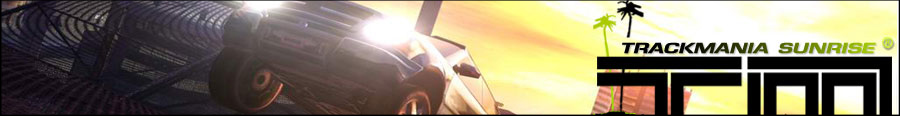 |
| 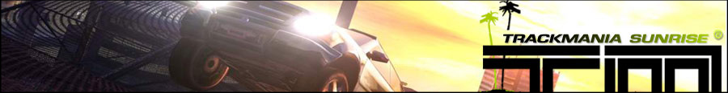 |
|
Добро пожаловать на портал загрузок моего сайта. Здесь вы найдете старые рабочие версии TrackMania для Windows 10/11. Если вы не доверяете этим установщикам, найдите на YouTube видео от St1ngLeR, который показывает, как самостоятельно патчить игры. Наконец, если вы хотите загрузить игры, то вам нужно будет щелкнуть на их игровом ящике, который находится на левой стороне веб-страницы. Хорошей игры! |
|
| JEUX TRACKMANIA MODDES |
| 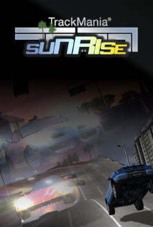 |
TrackMania Sunrise: Speed-Up! - это бета-мод для TMS. Разработка мода для TmSunrise началась в феврале-марте 2021 года. За это время было создано и изменено много контента в моде. Изначально разработка началась в конце 2018-начале 2019 года. В то время мод был основан на игре TM United 2006 (не Forever), но после выхода патча Win10 от KRBDZSKL мод сразу перешел на TMS. В этом моде бета-контент будет восстановлен и пересоздан: треки, скины, интерфейс, звуки и т.д. Дата выпуска: 30 сентября 2021 Обложка от Zai |
Win10 Win11 ===== |
| 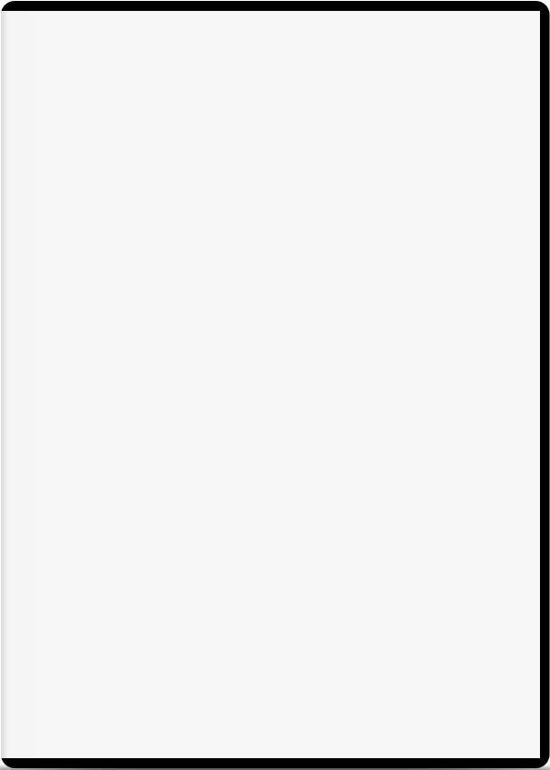 |
Поскольку я принимал участие в разработке tmssu, это мой второй мод. Он направлен на воссоздание семи первых окружений из TrackMania United. Вы можете сказать мне, что Nadeo уже это сделала. Я взял на себя свободу собрать все официальные скины машин из каждой версии предыдущих игр, в то время как я внедрял все первые трассы. Поскольку я не мог их добавить официально, вы можете найти их в разделе "Обзор". У меня была небольшая ошибка при создании этого мода, из-за которой запуск и игра не связаны: вы должны настроить игру через запускатель и играть в нее через игру. Для тех, кто нетерпелив и хочет играть, скачайте его сейчас, по завершении бета-теста, для тех, кто предпочитает немного подождать, вторая ссылка появится примерно в середине февраля. Наслаждайтесь игрой! Мод в настоящее время находится в бета-тесте |
Win10 Win11 ===== |
| JEUX PC OFFICIELS PATCHES |

|
TrackMania 2003 является гоночной видеоигрой, разработанной французской компанией Nadeo и выпущенной в ноябре 2003 года на PC. Он отличается от других гоночных игр своим аркадным геймплеем и большим разнообразием треков и режимов игры. Игра позволяет игрокам создавать свои собственные пользовательские треки и делиться ими онлайн с другими игроками. Он также предлагает режим одиночной игры с несколькими уровнями сложности, а также многопользовательский режим онлайн, позволяющий играть против других игроков со всего мира. TrackMania 2003 считается классикой жанра и был превознесен критиками за свою доступность, играбельность и богатое разнообразное содержание. Эта игра также была первым из многих выпусков серии игр TrackMania. |
Win10 Win11 ==== |
| 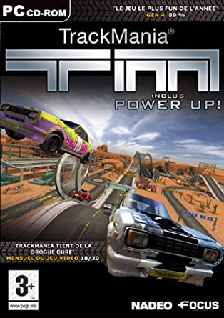 |
TrackMania Power Up это дополнение к гоночной игре TrackMania, разработанной французской компанией Nadeo и выпущенной в 2004 году на ПК. Это дополнение добавляет новые элементы игры, такие как более сложные трассы, новые блоки для создания трасс, дополнительные режимы игры и новую одиночную кампанию. Игра также предлагает функцию повтора, которая позволяет игрокам записывать и переигрывать свои гонки для улучшения своего времени или поделиться своими достижениями с другими игроками. Благодаря улучшенной графике и расширенному контенту, TrackMania Power Up была хорошо принята поклонниками серии TrackMania. |
Win10 Win11 ===== |
| 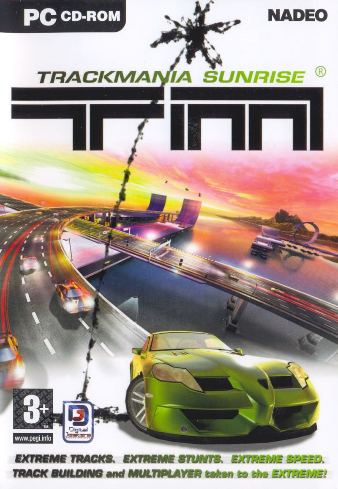 |
TrackMania Sunrise - это гоночная видеоигра, разработанная компанией Nadeo и изданная
Focus Home Interactive, выпущенная в 2005 году на ПК. Это продолжение игры TrackMania,
включающее в себя новые функции, такие как улучшенная графика, новые блоки для создания
трасс и оригинальный саундтрек. Игра также предлагает новые игровые режимы, улучшенный редактор трасс, лучшую совместимость с модами и возможность онлайн-многопользовательской игры. Она акцентирует на аркадном аспекте автогонок, предлагая увлекательный и забавный игровой опыт для игроков всех уровней мастерства. TrackMania Sunrise была хорошо принята критиками и считается одной из лучших игр в серии TrackMania. |
Win10 Win11 DemoBeta1 |
| 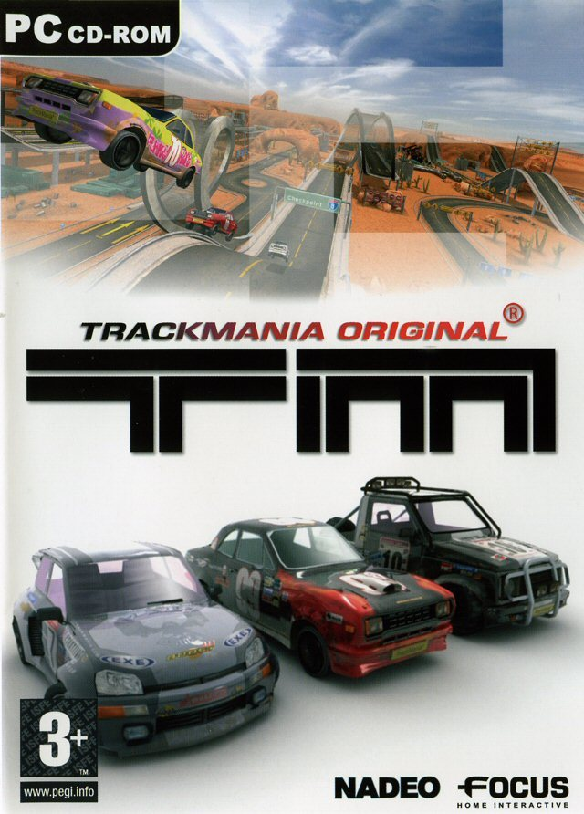 |
TrackMania Original - это компьютерная игра в жанре гоночного автосимулятора, разработанная Nadeo и выпущенная в 2003 году для ПК. Он считается первой частью серии игр TrackMania. Игра предлагает аркадный геймплей и множество трасс, с уровнями сложности от легкого до сложного. Она также делает упор на создание пользовательских трасс, позволяя игрокам создавать и делиться своими собственными трассами онлайн. TrackMania Original предлагает как одиночный режим, так и многопользовательский режим онлайн, позволяя игрокам подключаться и участвовать в гонках с другими игроками из разных стран мира. Своей доступностью, геймплеем и разнообразным контентом, TrackMania Original была высоко оценена критиками и стала классикой жанра гоночных автосимуляторов. |
Win10 Win11 ===== 539 МБ |
| 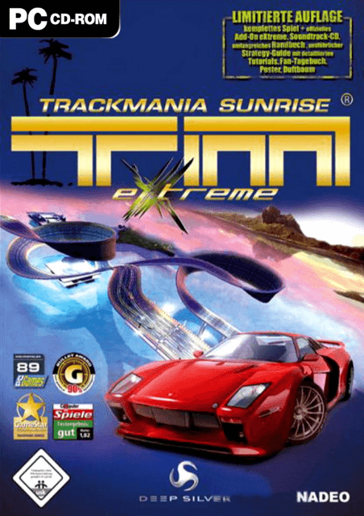 |
TrackMania Sunrise eXtreme - это дополнение к компьютерной игре гоночных автомобилей TrackMania Sunrise,
разработанной компанией Nadeo и выпущенной в 2005 году на ПК. Это дополнение добавляет новые игровые окружения, дополнительные транспортные средства, новые игровые режимы и более сложные трассы. Оно также предлагает новый саундтрек и улучшенную графику. TrackMania Sunrise eXtreme акцентирует внимание на онлайн-соревнованиях, предлагая расширенные многопользовательские возможности и мировой рейтинг для самых быстрых игроков. Благодаря своему улучшенному контенту и разнообразию трасс, TrackMania Sunrise eXtreme была хорошо принята поклонниками серии TrackMania. |
Win10 Win11 ===== 828 Мб |

|
TrackMania Nations ESWC является бесплатной видеоигрой гонок на машинах, разработанной компанией Nadeo и выпущенной на ПК в 2006 году. Она была создана для турнира ESWC (Electronic Sports World Cup) и быстро стала популярной благодаря аркадному геймплею, большому разнообразию треков и онлайн-конкурентоспособности. Игра предлагает одиночный режим с нарастающей сложностью и многопользовательский режим онлайн, позволяющий игрокам подключаться и участвовать в гонках с другими игроками со всего мира. Она также имеет продвинутый редактор треков, позволяющий игрокам создавать и делиться своими собственными трассами онлайн. TrackMania Nations ESWC была хорошо принята критиками и стала классикой жанра гоночных видеоигр. Она способствовала популяризации серии TrackMania и была последована несколькими другими играми этой франшизы. |
Win10 Win11 ===== 293 Мб |
| 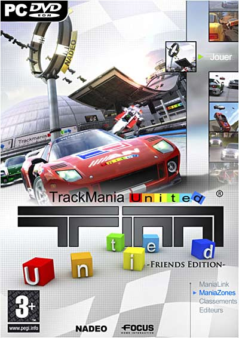 |
ТrackМаniа Unіtеd - видеоигра в жанре гонок на автомобилях, разработанная компанией Nadeo и выпущенная в 2006 году на ПК. Это компиляция предыдущих игр серии TrackMania, включая игровые среды из TrackMania Sunrise и трассы из TrackMania Original и TrackMania Nations ESWC. Игра предлагает аркадный игровой процесс и большое разнообразие трасс с уровнями сложности от легкого до сложного. Она также предлагает одиночный и многопользовательский режимы онлайн, позволяющие игрокам подключаться и участвовать в гонках с другими игроками со всего мира. TrackMania United также имеет продвинутый редактор трасс, позволяющий игрокам создавать и делиться своими собственными персонализированными трассами онлайн. Благодаря своему большому разнообразию контента и захватывающему игровому процессу, TrackMania United была хорошо принята поклонниками серии TrackMania. |
Win10 Win11 |
| 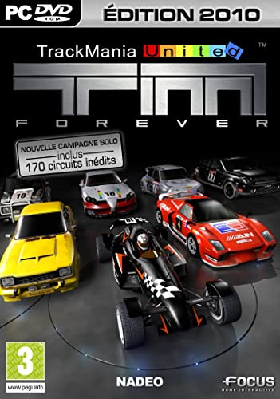 |
TrackMania United Forever - это улучшенная версия TrackMania United, вышедшая в 2008 году на ПК.
Эта версия предлагает новые игровые окружения, новые игровые режимы, новые опции настройки и улучшенную графику. Игра также предлагает расширенный онлайн-режим многопользовательской игры, позволяя игрокам подключаться и участвовать в гонках с другими игроками со всего мира. Он также имеет мировую систему рейтинга для самых быстрых игроков. TrackMania United Forever позволяет игрокам продолжать наслаждаться большим разнообразием контента TrackMania United, предлагая новые функции и улучшенный игровой опыт. Он был хорошо принят поклонниками серии TrackMania и считается одним из лучших выпусков франшизы. |
Win10 Win11 ===== 29,99€ |

|
TrackMania Nations Forever - это улучшенная бесплатная версия TrackMania Nations ESWC, выпущенная в 2008 году на PC. Эта гоночная игра предлагает большое количество треков и режимов игры, а также многопользовательский режим онлайн, где игроки могут участвовать в гонках с другими игроками со всего мира. Игра также имеет продвинутый редактор треков, который позволяет игрокам создавать и делиться своими собственными настроенными трассами онлайн. Она также предлагает систему глобального рейтинга для самых быстрых игроков. TrackMania Nations Forever хорошо принят фанатами серии TrackMania и считается одним из лучших выпусков этой франшизы. Он все еще играется и оценивается в наше время, особенно в турнирах eSports. |
Win10 Win11 ===== Бесплатно |

|
TrackMania 2: Canyon - это игра гоночных автомобилей, разработанная французской студией Nadeo и выпущенная в сентябре 2011 года на ПК. Игра происходит в каньоне и отличается своим аркадным геймплеем, большим разнообразием трасс и игровых режимов, а также расширенным редактором трасс. Игра предлагает одиночный режим с несколькими уровнями сложности, а также многопользовательский режим онлайн, который позволяет играть против других игроков из разных уголков мира. Она также предлагает возможность создавать и делиться своими собственными трассами в Интернете, а также систему глобального рейтинга для самых быстрых игроков. TrackMania 2: Canyon хорошо принят фанатами серии TrackMania и считается одним из лучших выпусков франшизы. Игра неоднократно обновлялась после ее первого выпуска, добавляя новый контент и функции. |
Win10 Win11 ===== 19,99€ |
| 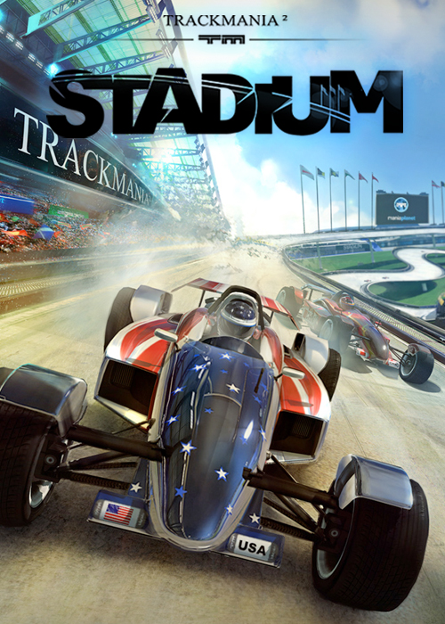 |
TrackMania 2: Stadium - это гоночная игра, разработанная компанией Nadeo и выпущенная в феврале 2013 года на ПК. Игра происходит в стадионном окружении и в основном ориентирована на онлайн-соревнования с аркадным геймплеем и быстрыми гонками. Игра предлагает одиночный режим с гонками и испытаниями для игроков, но в основном сосредоточена на многопользовательском онлайн-режиме, который позволяет игрокам участвовать в гонках в реальном времени против других игроков со всего мира. Игра также имеет продвинутый редактор треков, который позволяет игрокам создавать и делиться своими собственными настраиваемыми треками. TrackMania 2: Stadium хорошо принят фанатами серии TrackMania за быстрый и забавный геймплей, улучшенную графику и систему рейтинга. Игра также считается одной из лучших онлайн-гоночных игр, доступных на ПК. |
Win10 Win11 ===== 9,99€ |
| 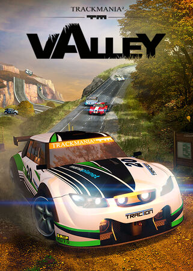 |
TrackMania 2: Valley - это гоночная игра от Nadeo, выпущенная в июле 2013 года на ПК. Игра происходит в долинной среде и предлагает раллийные гонки с реалистичной физикой управления. Игра предлагает одиночный режим с гонками и вызовами для игроков, а также многопользовательский режим онлайн, позволяющий игрокам участвовать в гонках в реальном времени против других игроков со всего мира. Он также имеет продвинутый редактор трасс, который позволяет игрокам создавать и делиться своими собственными настроенными трассами. TrackMania 2: Valley хорошо принят поклонниками серии TrackMania за реалистичную физику управления, улучшенную графику и систему рейтинга. Игра считается одной из лучших раллийных гоночных игр, доступных на ПК. |
Win10 Win11 ===== 19,99€ |
| 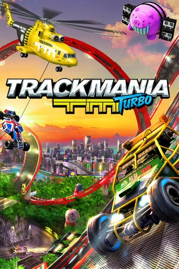 |
TrackMania Turbo - это игра гоночных автомобилей, разработанная компанией Nadeo и выпущенная в марте 2016 года на PC. Игра предлагает быстрые и интенсивные автомобильные гонки в различных средах, таких как пустыни, горы и города. Игра имеет одиночный режим с возрастающей сложностью и множеством вызовов для игроков, а также многопользовательский онлайн-режим, который позволяет игрокам участвовать в гонках в реальном времени против других игроков со всего мира. Игра также предлагает продвинутый редактор трасс, который позволяет игрокам создавать и делиться своими собственными настроенными трассами. TrackMania Turbo была хорошо принята фанатами серии TrackMania за свой быстрый и интенсивный игровой процесс, а также за улучшенную графику и новые функции, такие как режим Double Driver, который позволяет двум игрокам управлять одной машиной. Игра считается одной из лучших гоночных игр, доступных на PC. |
Win10 Win11 ===== 39,99 € |
| 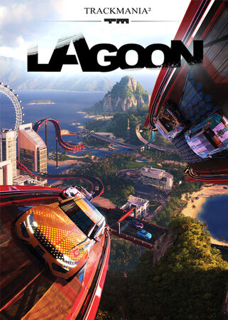 |
TrackMania 2: Lagoon - это гоночная игра, разработанная Nadeo и изданная Ubisoft в 2017 году. Игра
происходит в тропической среде, где игроки могут создавать, делиться и играть в гоночные игры на безумных и сумасшедших трассах. Игра предлагает широкий спектр игровых режимов, от одиночных гонок до многопользовательских соревнований в режиме онлайн, а также очень продвинутые инструменты для создания трасс, которые позволяют игрокам проектировать свои собственные персонализированные трассы. Игровой процесс быстрый и захватывающий, с легкими в изучении, но трудными в освоении контролами, и яркой, детализированной графикой, которая добавляет экзотической атмосферы игры. |
Win10 Win11 ===== 19,99€ |
| 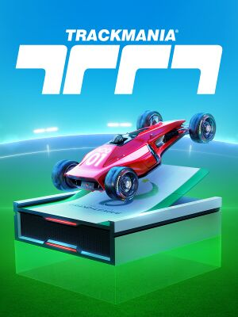 |
TrackMania 2020 является последней версией знаменитой серии автогонок, разработанной Nadeo и опубликованной Ubisoft. Игра предлагает новый игровой движок, улучшенную графику и новый пользовательский интерфейс. Он также имеет новую систему прогресса с одиночной кампанией и конкурентным онлайн-мультиплеером. Игроки могут настроить свои автомобили скинами и аксессуарами, а игра также имеет редактор уровней для создания пользовательских трасс. TrackMania 2020 - это конкурентная и увлекательная гоночная игра, которая ставит акцент на онлайн-соревнования, настройку и творчество. |
Win10 Win11 ===== Бесплатно |
| JEUX TRACKMANIA SUR CONSOLES DE JEU |
| 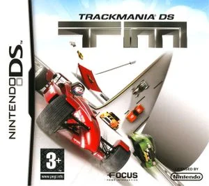 |
TrackMania DS est un jeu de course développé par Firebrand Games et édité par Focus Home Interactive, sorti
en 2008 sur Nintendo DS. Le jeu propose un gameplay arcade axé sur la vitesse et l'adresse du joueur, avec
la possibilité de créer et partager ses propres circuits. Il comporte trois modes de jeu différents, dont un
mode solo où le joueur doit remporter des courses et gagner des médailles, ainsi qu'un mode multijoueur qui
permet de jouer en ligne ou en local jusqu'à quatre joueurs. Les graphismes sont simples mais efficaces, et
le jeu propose une bande-son énergique pour accompagner l'action. |
Nintendo DS ===== 32 Мб |
| 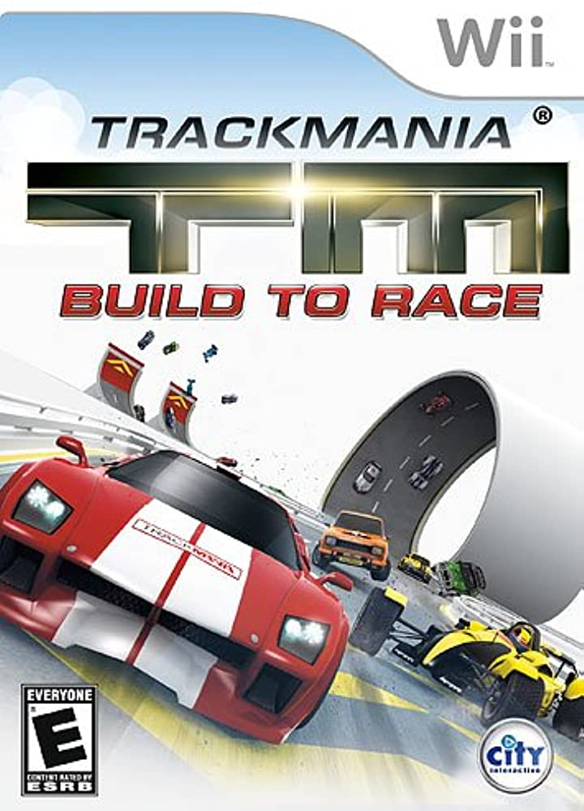 |
TrackMania Wii: Build to Race est un jeu de course développé pour la console Wii de Nintendo. Il offre une
expérience de course unique et addictive en permettant aux joueurs de créer leurs propres pistes de course
personnalisées à l'aide de l'éditeur de niveau intégré. Les joueurs peuvent également participer à des
courses sur des pistes pré-construites et affronter d'autres joueurs en ligne. Le jeu propose différents
modes de jeu tels que le mode solo, le mode multijoueur local et en ligne ainsi que différents modes de
course comme la course de vitesse, la course de précision et la course de style libre. Les graphismes sont
colorés et la musique est entraînante, faisant de TrackMania Wii: Build to Race un jeu de course amusant et
divertissant pour tous les fans de jeux de course sur Wii. |
Nintendo Wii ===== |
| 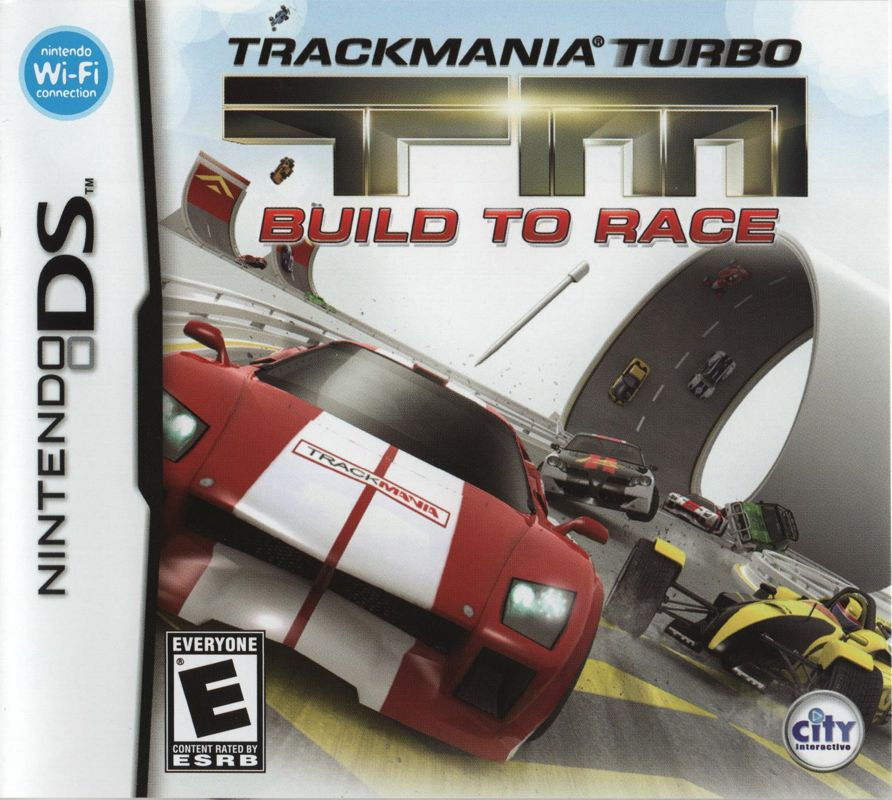 |
TrackMania DS: Build to Race est un jeu de course développé pour la console portable Nintendo DS. Il offre
une expérience de course unique en permettant aux joueurs de créer leurs propres pistes de course
personnalisées à l'aide de l'éditeur de niveau intégré. Les joueurs peuvent également participer à des
courses sur des pistes pré-construites et affronter d'autres joueurs en multijoueur local. Le jeu propose
différents modes de jeu tels que le mode solo, le mode multijoueur local et différents modes de course comme
la course de vitesse, la course de précision et la course de style libre. Les graphismes sont colorés et la
musique est entraînante, faisant de TrackMania DS: Build to Race un jeu de course amusant et divertissant
pour tous les fans de jeux de course sur Nintendo DS. |
Nintendo DS ===== |
| 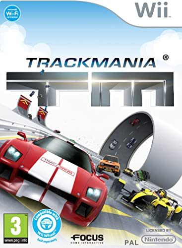 |
TrackMania Wii est un jeu de course développé par Firebrand Games et édité par Focus Home Interactive, sorti
en 2010 sur Wii. Le jeu propose un gameplay arcade rapide et délirant avec des courses de voitures sur des
circuits complètement fous avec des sauts vertigineux, des boucles et des virages serrés. Il offre un mode
solo avec différents niveaux de difficulté, ainsi qu'un mode multijoueur pour jouer jusqu'à quatre joueurs
en écran partagé. Le jeu comporte également un éditeur de circuit intuitif qui permet aux joueurs de créer
et partager leurs propres circuits. Les graphismes sont colorés et vibrants, avec une bande-son entraînante
pour accompagner l'action. |
Nintendo Wii ===== 556 Mo |
| 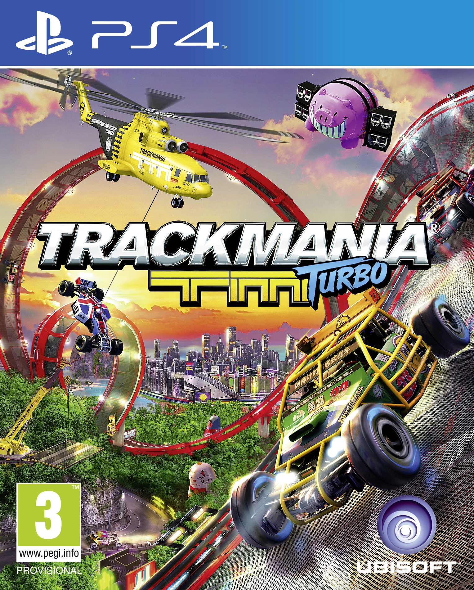 |
TrackMania Turbo est un jeu de course développé par Nadeo et édité par Ubisoft. Il est disponible sur
Playstation 4. Le jeu propose une expérience de course arcade avec un gameplay rapide et addictif, des
graphismes colorés et une bande sonore dynamique. Il comprend plus de 200 pistes réparties sur 4
environnements différents, chacun avec son propre style de conduite unique. Les joueurs peuvent
personnaliser leurs voitures et défier leurs amis en ligne ou hors ligne dans des modes multijoueurs et des
défis de contre-la-montre. Le jeu propose également un éditeur de niveaux pour créer des pistes
personnalisées et les partager avec la communauté. Overall, TrackMania Turbo est un jeu de course amusant et
stimulant pour les fans de courses arcade et de défis de haute vitesse. |
PlayStation 4 ===== 29,99€ |

|
TrackMania Turbo est un jeu de course développé par Nadeo et édité par Ubisoft, disponible sur Xbox One. Le
jeu propose une expérience de course arcade avec des graphismes colorés, une bande sonore dynamique et des
mécaniques de conduite rapides et addictives. Les joueurs peuvent choisir parmi plus de 200 pistes réparties
sur quatre environnements différents, chacun avec son propre style de conduite unique. Le jeu comprend
également des modes multijoueurs pour défier des joueurs en ligne ou hors ligne dans des défis de
contre-la-montre ou des courses. Les joueurs peuvent également créer et partager leurs propres pistes
personnalisées à l'aide de l'éditeur de niveaux du jeu. En somme, TrackMania Turbo est un jeu de course
divertissant et stimulant pour les amateurs de courses arcade et de défis de vitesse. |
Microsoft Xbox One ===== 29,99€ |
| JEUX TRACKMANIA MOBILES |
| 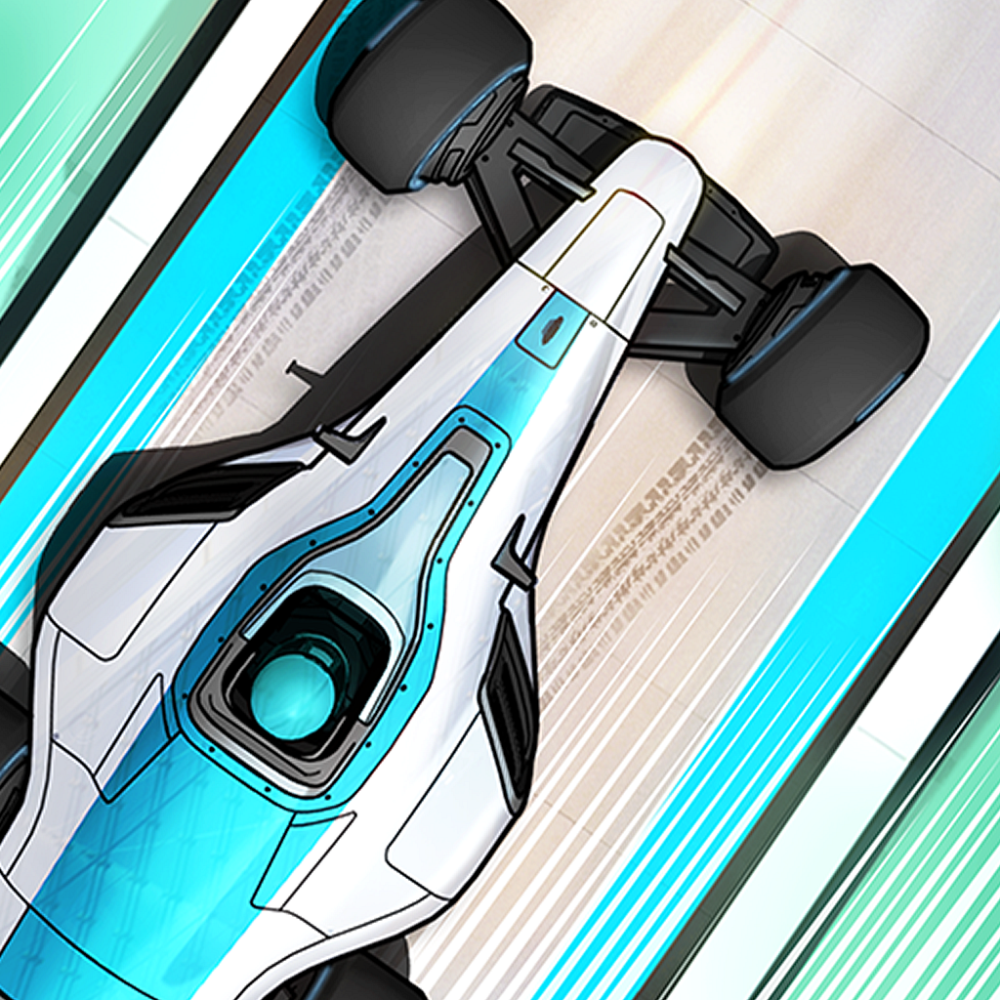 |
TrackMania Blitz est un jeu de course mobile gratuit pour iOS et Android. Il offre une expérience de course
rapide et addictive, avec des pistes de course générées aléatoirement pour une variété de défis. Les joueurs
peuvent collecter des pièces et des boosters pour améliorer leurs performances, et peuvent participer à des
défis quotidiens pour gagner des récompenses exclusives. Le jeu propose également un mode multijoueur en
temps réel, permettant aux joueurs de défier leurs amis ou d'autres joueurs en ligne. Avec des graphismes
colorés et des contrôles simples, TrackMania Blitz est un jeu de course mobile amusant et excitant pour tous
les fans de jeux de course. |
Android iOS ===== |
| 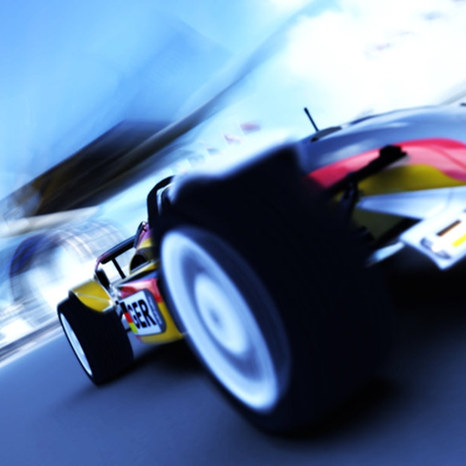 |
TrackRacing est un jeu de course populaire pour Android, développé par Soulkey. Le jeu s'inspire de
TrackMania Nations et propose un gameplay similaire, avec des éléments tels que l'écran partagé pour 2
joueurs, un mode multijoueur, des clans, un accéléromètre et la fonctionnalité de flashback. Le jeu propose
également 20 cartes différentes pour défier les joueurs, avec des niveaux de difficulté variés. Bien que ce
jeu ne soit pas un jeu officiel de la série TrackMania, il est considéré comme une excellente adaptation
pour les appareils mobiles et est très apprécié par les fans de jeux de course. |
Android ===== Non jouable |
| 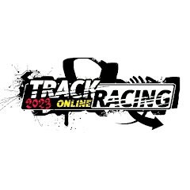 |
TrackRacing Online est un jeu de course en ligne gratuit qui propose des cascades aériennes à grande vitesse
grâce à un tout nouveau moteur physique. Le jeu comprend 71 voitures différentes et de nombreux nouveaux
systèmes, tels que le mode de jeu joueur unique, multijoueur (course, CTF, DM, poursuite) et aventure. Avec
la fonction de rembobinage, les joueurs peuvent remonter dans le temps pour corriger les erreurs ou
améliorer leurs performances. Le jeu propose également plus de 520 000 pistes créées par les utilisateurs,
ainsi qu'un éditeur de niveau et un peintre automobile pour personnaliser les voitures. En outre, le jeu est
entièrement gratuit et ne contient pas d'achats intégrés ni de publicités. |
Android ===== 79 Mo |
| CREDITS |
|
©2023 : vdepontac. Certains droits réservés. L'interface de ce site s'inspire du site-portail des développeurs de TrackMania Sunrise édité en 2005. Vous pouvez le retrouver avec une WayBack Machine |